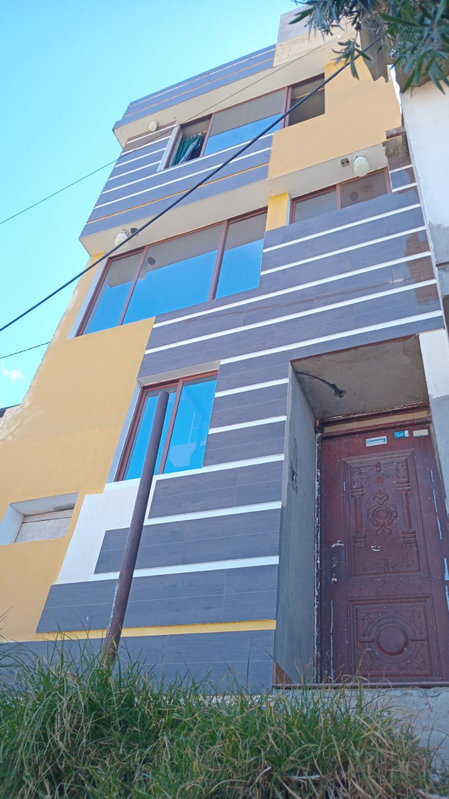
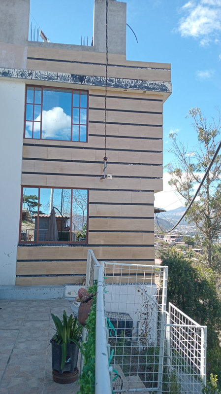
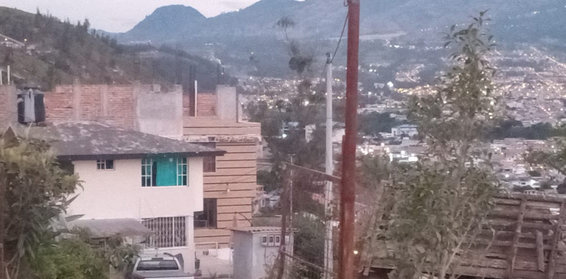
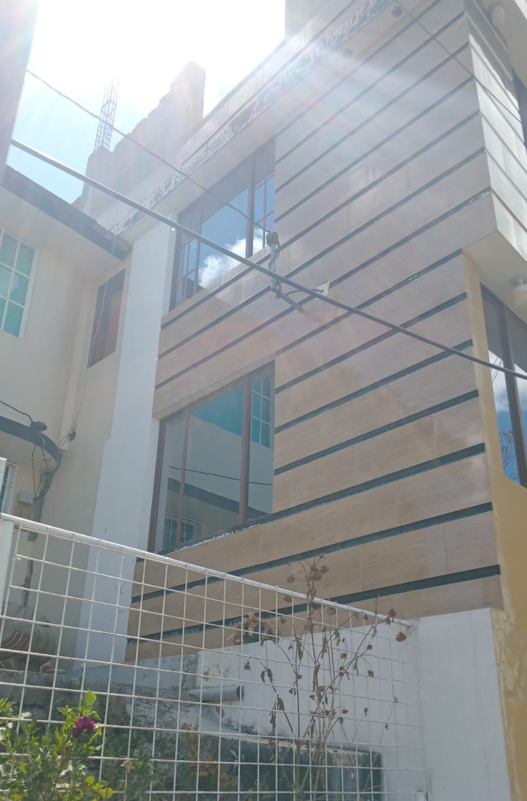

← volver al mapa
Casa - EC-RJ-155431
EC-RJ-155431 · casa · IBARRA, Imbabura
★ Oferta destacada




Datos del remate
| Avalúo pericial | $33,013 |
| Tipo de bien | casa |
| Área de construcción | 97.30 m² |
| Área de terreno | 48.18 m² |
| Cantón / Provincia | IBARRA, Imbabura |
| Dirección / Sector | Urbano. sector-barrio "quinta del olivo", junto a laguna de yahuarcocha |
| Señalamiento | Segundo Señalamiento |
| Fecha de remate | 2026-08-31 |
| No. de proceso | 10333202400491 |
Análisis vs. mercado
| Avalúo por m² | $339/m² |
| Mediana de mercado en la zona | $539/m² |
| Descuento vs. mercado | 37.1% |
| Comparables usados | 19 |
| Radio de búsqueda | 2000 m |
| Puntaje | 80/100 |
Descripción completa del avalúo
lote de terreno de topografia accidentada, en sector con afectación vial (panamericana e-35), de forma regular con dimenciones mínimas el suelo, con todos los servicios básicos, de dificil acceso vehicular ( via de tercer orden) y peatonal, por estrecha acera junto a ladera. sector urbano de expansión residencial de estrato socio económico bajo y seguridad en la misma mediada por ser área urbana periférica.area edificada de estructura de hor.armado de tres niveles y terraza con proyección tanto en estructura como en mamposteria. retiro solo posterior en la edificación de vivienda unifamiliar semiterminada en un 70%. losas planas de entrepiso y cubierta accesible con proyección. edad estimada de 7 años la construcción con acabados de tipo popular inconclusos y en regular estado los existentes.patologia constructiva de asentamiento en acera frontal de acceso. edificación en zona de riesgo por su topografia.
lote de terreno urbano, de tamaño pequeño y en zona de topografia irregular, con afectación vial. accesibilidad baja, con vias de tercer orden; edificación devivienda unifamiliar de setruc. de hor. armado, con losas planas de entrepiso y cubierta con terraza accesible, construccion semiterminada de acabados populares, terraza con proyeccion de paredes y columnas, y tanque reserv. de agua. movimiento de tierras en parte posterior para ganar área en el talud del declive del terreno.
sector-barrio "quinta del olivo", junto a laguna de yahuarcocha
Límites: linderos registrales "norte: entrece metros setenta y cuatro centimetros con romel endara; sur: quince metros cero quince centimetros con lote dos; este: en tres metros veintiun centimetros con ruben belalcazar ; y oeste: en tres metros setenta centimetros con afectacion de vía panamericana..."
Clave catastral: 10010513008002000000000
Análisis de inversión
⚠ Dudosa — revisar bienDescuento moderado (35%); construcción semiterminada (70%), con patología de asentamiento y en zona de riesgo por su topografía.
A favor:
En contra:
- Semiterminada
- Zona de riesgo topográfico
Análisis elaborado a partir de la descripción del avalúo — no es asesoría legal ni financiera.
Esta ficha es una copia de lo publicado en el sitio oficial de remates
judiciales de la Función Judicial del Ecuador, para consulta — no
reemplaza el expediente judicial. remates.funcionjudicial.gob.ec no da
un link propio por remate, por eso se generó esta página aparte.
Antes de ofertar, el expediente debe revisarlo un abogado.